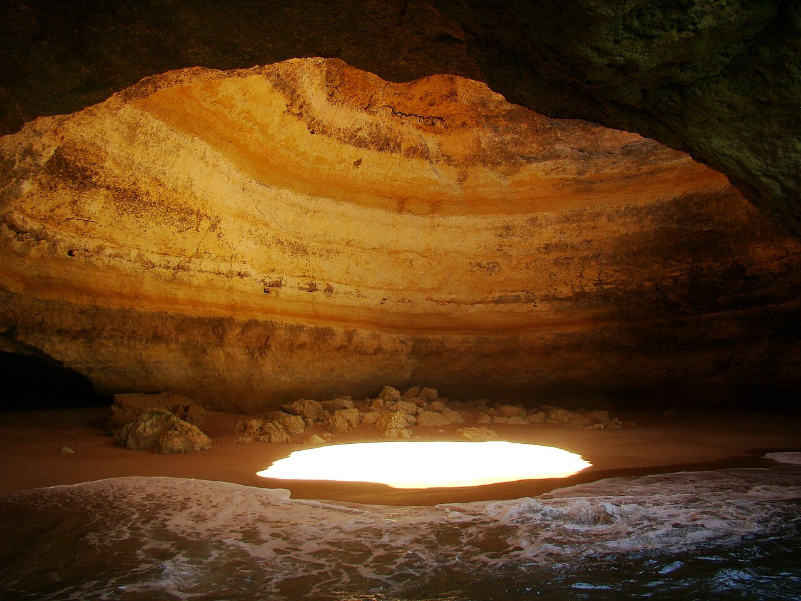
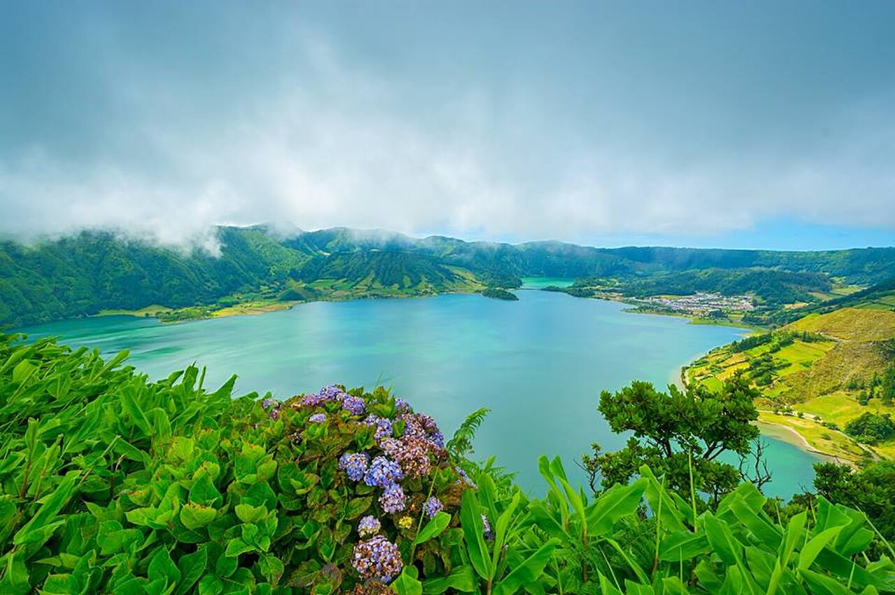

Portekiz Turizm Rehberi
Yılda 30 milyonu aşkın gezgini ağırlayan Portekiz; Atlantik'in masalsı sarayları, güneşle yıkanan altın sahilleri, tarihi tramvayları, zengin gastronomisi ve dünyaca ünlü misafirperverliğiyle Avrupa'nın parlayan yıldızıdır.
Verilerle Portekiz Turizmi
Portekiz Ulusal İstatistik Enstitüsü (INE) ve Turismo de Portugal resmi verilerine göre ülkenin turizm hacmi tarihi zirvesindedir.
Portekiz'e En Çok Turist Gönderen Ülkeler (% Pazar Payı)
Kaynak: INE Portugal 2024* Türk Hava Yolları'nın İstanbul-Lizbon ve İstanbul-Porto doğrudan uçuş seferlerinin artmasıyla birlikte Türkiye'den Portekiz'e giden turist sayısında her yıl %20'nin üzerinde düzenli bir artış yaşanmaktadır.
Portekiz'in En Büyüleyici Turistik Noktaları
Tarihi gotik manastırlardan altın kumsallara, masal şatolarından okyanus krater göllerine kadar mutlaka görülmesi gereken yerler:
 UNESCO Mirası
UNESCO Mirası
Belém Kulesi & Jerónimos
16. yüzyılda Tejo Nehri ağzına inşa edilen Belém Kulesi, Keşifler Çağı'nın sembolüdür. Vasco da Gama'nın denize açıldığı noktada yer alan Jerónimos Manastırı ile birlikte Manuelin mimarisinin zirvesidir.
- 📍 Öne Çıkan: Tarihi 28 nolu Sarı Tramvay & Alfama
- 🥧 Tat: Orijinal fırından taze sıcak Pastéis de Belém
- 🎫 İpucu: Lisboa Card ile sıra beklemeden ücretsiz giriş
 Dünyanın En İkonik Sarayı
Dünyanın En İkonik Sarayı
Pena Sarayı & Cabo da Roca
Sintra dağlarının sisli zirvesinde sarı, kırmızı ve mor tonlarıyla yükselen Pena Sarayı, 19. yüzyıl Romantizm akımının yaşayan masalıdır. Yakınındaki Cabo da Roca ise Avrupa kıtasının en batı ucudur.
- 🌊 Cabo da Roca: "Karaların bittiği, denizin başladığı yer"
- 🏰 Quinta da Regaleira: Gizemli Ters Başlatma Kuyusu
- 🚆 Ulaşım: Lizbon Rossio Garı'ndan 40 dakikalık tren
 Kuzeyin Başkenti
Kuzeyin Başkenti
Ribeira & Dom Luís I Köprüsü
Douro Nehri'nin iki yakasını bağlayan heybetli çift katlı çelik köprü, Gustave Eiffel'in öğrencisi Teófilo Seyrig tarafından tasarlanmıştır. Nehir kıyısındaki rengarenk Ribeira evleri ve şarap mahzenleri büyüleyicidir.
- 📚 Livraria Lello: Harry Potter'a ilham veren masalsı kitapçı
- 🎨 São Bento Garı: 20.000 el yapımı Azulejo çinisi
- 🍷 Deneyim: Douro Nehri üzerinde tarihi Rabelo tekne turu

Dünyanın En Güzel MağarasıBenagil Mağarası & Altın Kıyılar
Tepesinde doğal bir kubbe penceresi olan Benagil Mağarası (Algar de Benagil), içeri süzülen güneş ışığı ve altın kumsalıyla dünyanın en çok fotoğraflanan doğal harikalarından biridir.
- 🛶 Erişim: Tekne, kano (kayak) veya denizden yüzerek
- 🏖️ Praia da Marinha: Dünyanın en iyi 10 plajı listesinde
- 🏄 Aktivite: Ponta da Piedade falezleri ve okyanus sörfü
 Sonsuz Bahar Adası
Sonsuz Bahar Adası
Funchal & Santana Evleri
Atlantik Okyanusu'nda yer alan Madeira, tropikal doğası, egzotik botanik bahçeleri, volkanik falezleri ve Santana kasabasındaki geleneksel saz çatılı üçgen evleriyle (Palheiros) dört mevsim baharı yaşatır.
- 🚶 Levada Yürüyüşleri: 2.000 km'lik su kanalı patikaları
- 🛷 Monte Toboggan: Hasır kızaklarla asfalt üzerinde iniş
- ✈️ Funchal: Dünyanın en heyecan verici havaalanı pisti

Atlantik'in KalbiSete Cidades & Krater Gölleri
9 volkanik adadan oluşan Azorlar, devasa krater gölleri, fışkıran jeotermal kaplıcaları ve el değmemiş yeşil vadileriyle doğaseverlerin mabedidir. Biri zümrüt yeşili diğeri safir mavisi olan Sete Cidades efsanevidir.
- 🌋 Pico Dağı: Portekiz'in en yüksek zirvesi (2.351 m)
- 🐳 Balina Gözlemi: Dünyanın 1 numaralı balina izleme rotası
- 🍲 Cozido das Furnas: Volkan buharında 6 saat pişen güveç
Portekiz'e Hangi Ay Gidilmeli?
Portekiz yılda 300'den fazla güneşli günüyle Avrupa'nın en ılıman ülkesidir. Seyahat amacınıza en uygun dönemi seçin:
Mayıs (Primavera - İlkbahar)
Mayıs ayı Portekiz'i gezmek için yılın tartışmasız en güzel ayıdır. Ne yazın bunaltıcı sıcakları ne de kış yağmurları vardır. Sintra saray bahçeleri rengarenk çiçeklerle doludur, Lizbon ve Porto sokakları yürüyerek keşfetmek için harikadır.
🎯 Bu Ay İçin En İyi Plan:
- ✨ Lizbon - Sintra - Cascais üçgeninde kültürel yürüyüşler
- 🍷 Douro Vadisi'nde açık hava şarap bağları turları
- 📸 Alfama seyir teraslarında (Miradouros) gün batımı
- 💰 Yaz yoğunluğu başlamadan önce uygun otel ve uçak fiyatları
| Mevsim | Aylar | Ortalama Sıcaklık | Öne Çıkan Özellik | Kime Tavsiye Edilir? |
|---|---|---|---|---|
| 🌸 İlkbahar (Altın Dönem) | Nisan - Mayıs | 19°C - 24°C | Çiçeklenen doğa, ideal yürüyüş havası | Kültür, mimari, fotoğrafçılık ve çiftler |
| ☀️ Yaz (Yüksek Sezon) | Haziran - Ağustos | 27°C - 34°C | Algarve plajları, sokak festivalleri (Santo António, São João) | Deniz, güneş, plaj partileri ve gece hayatı |
| 🍂 Sonbahar (Bağ Bozumu) | Eylül - Ekim | 22°C - 26°C | Douro bağ bozumu, sıcak deniz suyu, sakinleşen şehirler | Gurme lezzet avcıları, şarap tutkunları, balayı |
| ❄️ Kış (Düşük Bütçe & Sörf) | Kasım - Mart | 14°C - 17°C | Nazaré'de 30 metrelik dev dalgalar, sırasız müzeler | Ekonomik seyahat edenler, sörfçüler, kış kaçamağı |
Giriş Koşulları & Türk Konsolosluğu
Portekiz'e seyahat etmeyi planlayan Türk vatandaşları için vize prosedürleri, doğrudan uçuşlar ve diplomatik temsilcilik bilgileri:
Portekiz'e Giriş Nasıl?
Schengen Vizesi, Pasaport & Ulaşım✈️ İstanbul (IST) ⇄ Lizbon (LIS) — Günde 2-3 sefer (~4s 45dk)
✈️ İstanbul (IST) ⇄ Porto (OPO) — Her gün direkt sefer (~4s 50dk)
Portekiz'de Konsolosluğumuz Var mı?
EVET! T.C. Lizbon Büyükelçiliği(Belém semtinin hemen üstündeki elçilikler bölgesi)
Nöbetçi Tel (Mesai Dışı Acil): +351 96 523 00 22
embassy.lisbon@mfa.gov.tr